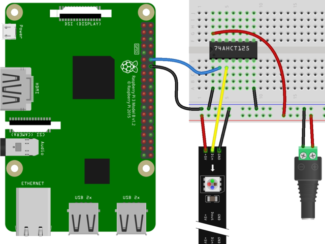

Posted on 14th December 2020
It's that time of the year again, so out come the Raspberry Pi driven LED pixels. Here are some notes to myself about how to set this all up, before I forget again for another 11 months.
The following is from Adafruit guide; Link to image

But I added a 300 ohm resistor between the output of the IC and the data pin of the pixels; and a 1000 μF capacitor across the terminals of my power supply.
Despite Python 2 being end of life, it seems you still need to use python3 and pip3 etc. The Python bindings now have their own GitHub repo: https://github.com/rpi-ws281x/rpi-ws281x-python
I just did:
sudo pip3 install rpi_ws281x
You do need sudo here as you will need to run Python in sudo mode to access the correct hardware (pwm) on the Pi. Also remember that the GPIO number is not the same as the pin number! Using the pinout command is handy here; see also
gpio docs
I then managed to bork the wifi/bluetooth hardware on my Pi Zero (perhaps by over-volting it using a bad Quick Charge usb supply). Using a Model B instead, only GPIO 21 works out the box; for further details perhaps see readme.
That's as far as I got. Maybe next year some custom light-show will actually be written.